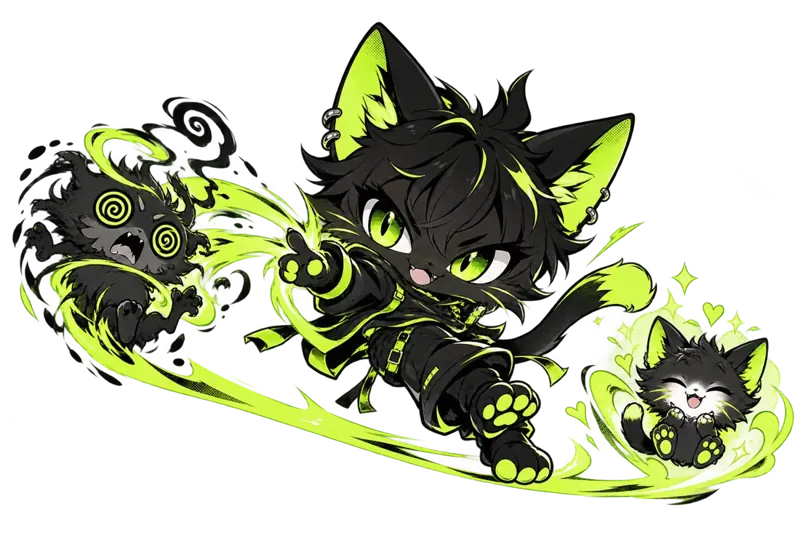

A little
kitty break.
Catch eight kitties in 15 seconds.
Then back to your world.

0of 8 caught
15seconds left
Your feed can wait for 15 seconds.
Click or tap the kitty. Keyboard: press Enter or Space on the focused kitty. Escape closes the game.
A tiny local game. No scores saved. No prizes. Just cats.
Break over.
The kitties are taking a nap. You can close this tab.